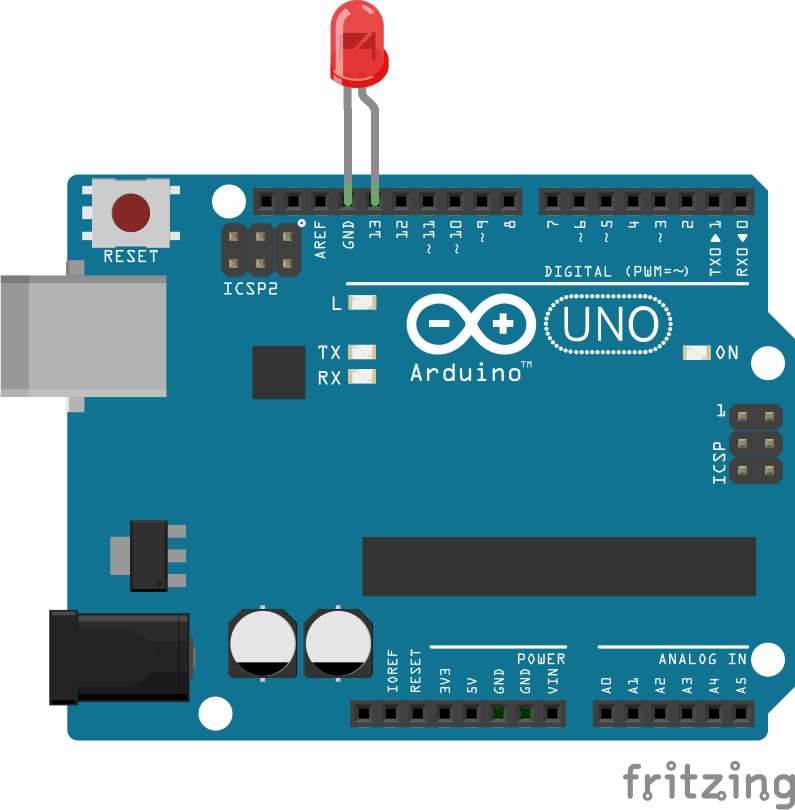

Hallessandro' Adventures
#11 - Johnny Five - Controlling a Arduino Uno with JavaScript

Sup guys, I’m back, this time to talk about Johnny Five, a JavaScript plataform for IoT and Robotic. In this post we will see how to control a Led by HTTP request.
Before we start, for this post It Is necessary that you have an Arduino and at least one Led.
Let’s start installing Johnny-Five and your requirements:
apt-get install nodejs-legacy
apt-get install build-essential
npm install serialport
npm install johnny-five
Now open your text editor and create a new .js file and paste the following code:
var five = require("johnny-five"),
board = new five.Board();
board.on("ready", function() {
// Create an Led on pin 13
var led = new five.Led(13);
// Strobe the pin on/off, defaults to 100ms phases
led.strobe();
});
Connect your Arduino on PC, and the Led in Arduino this way:

Now on terminal, run the folowing command:
sudo node strobe.js
If everything ok, your Led will light up. :-D
Now let’s make things more fun. Create a folder in your machine and execute npm init on this folder. After install the Express, with the following command:
npm install --save express
Create a new JS file called controller.js, and in this file, import the Express and the Johnny Five
const express = require("express");
const five = require('johnny-five');
const app = express();
Now create the following variables, to deal with de board and the status of Led:
var board = new five.Board();
var isReady = false;
var isOn = false;
var led;
Put your Express server to run, this way:
app.listen(3000, () => {
console.log("Servidor rodando na porta 3000");
});
app.use(function(req, res, next) {
res.header("Access-Control-Allow-Origin", "*");
res.header("Access-Control-Allow-Headers", "*");
next();
});
Now define a route to receive GET Requests:
app.route("/")
.get((req, res) => {
toggleLed();
res.json({status: isOn});
});
When the board Is ready, It’s necessary something to deal with it, for this add the following code on the controller.js:
board.on('ready', function() {
// Define the pin 13 to be used
led = new five.Led(13);
// Turn off the Led
led.off();
// save the actual state of the Led
isReady = true;
});
Now add the code for the toggleLed() method, called in the app.route.
function toggleLed () {
// If the Led is on
if (isOn) {
//Turn off the Led
led.off();
isOn = false;
} else {
//Turn on the Led
led.on();
isOn = true;
}
}
The complete code can be found on my GitHub here.
Now on terminal run the folowwing command:
sudo node controller.js
Access localhost:3000 on browser and see the magic happening.
To improve our experience, let’s create a client application for turn on/off the led. Create a new folder on your machine, and create the folder img, and the files index.html, index.css and index.js.
Inside the folder img, add the images here.
On the css file, add the following code:
.div-buttons {
display: flex;
justify-content: center;
padding-top: 20%;
}
.buttons {
width: auto;
height: 140px;
}
.img-led {
height: 70px;
width: auto;
}
.title {
display: flex;
justify-content: center;
}
#text-led {
font-family: Arial, Helvetica, sans-serif;
font-size: 20pt;
text-transform: uppercase;
}
body {
background-color: beige;
background-image: linear-gradient(to right,#e5e5ff, #ccccff);
}
Inside the html file, add the following code:
<!DOCTYPE html>
<html lang="en">
<head>
<meta charset="UTF-8">
<meta name="viewport" content="width=device-width, initial-scale=1.0">
<meta http-equiv="X-UA-Compatible" content="ie=edge">
<link rel="stylesheet" href="index.css">
<title>Led Controller</title>
</head>
<body>
<div class="title"></div>
<div class="div-buttons"></div>
<!-- Used to made HTTP request -->
<script src="https://unpkg.com/axios/dist/axios.min.js"></script>
<script src="index.js"></script>
</body>
</html>
Now on the js file, let’s create a function to made get requests to our api, using the axios library, imported in our html file:
function consultarStatusLed(){
let url = 'http://localhost:3000/';
axios.get(url, conf)
.then(function (response) {
changeButtons(response.data.status);
})
.catch(function (error) {
// handle error
console.log(error);
})
}
Now create a function to request the change of the state of the Led, and change the button on page, for this add the following code:
const $ = document.querySelector.bind(document);
function changeButtons(valor){
if(valor == false){
$(".div-buttons").innerHTML = `<input type="image" src="img/on.png" class="buttons" onclick="mudarStatusLed()">`;
$(".title").innerHTML = `
<img src="img/led-off.svg" class="img-led">
<h3 id="text-led" style='color:green'>Led Controller</h3>
<img src="img/led-off.svg" class="img-led">
`;
}else {
$(".div-buttons").innerHTML = `<input type="image" src="img/off.png" class="buttons" onclick="mudarStatusLed()">`;
$(".title").innerHTML = `
<img src="img/led-on.svg" class="img-led">
<h3 id="text-led" style='color:red'>Led Controller</h3>
<img src="img/led-on.svg" class="img-led">
`;
}
}
function mudarStatusLed(){
consultarStatusLed();
}
Lastly add a call to consultaStatusLed() on the end of the file:
consultarStatusLed();
The complete code can be found in my GitHub here.
Save everything and let’s test. Open index.html in a browser and click the on / off button a few times, if everything went well, the result will be as show in the video link below:
That’s all folks, until next time!